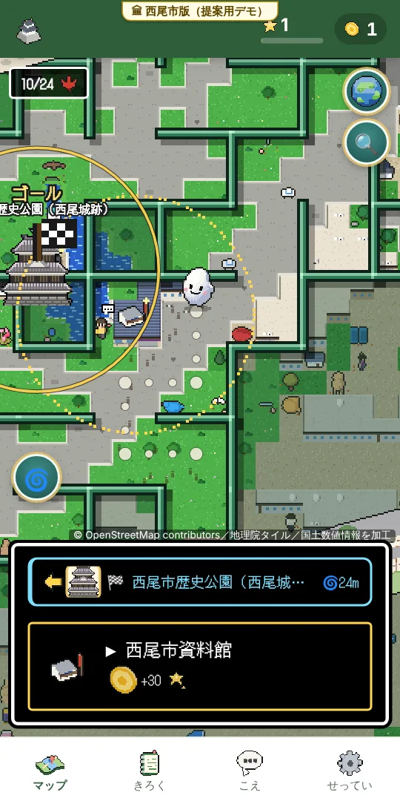
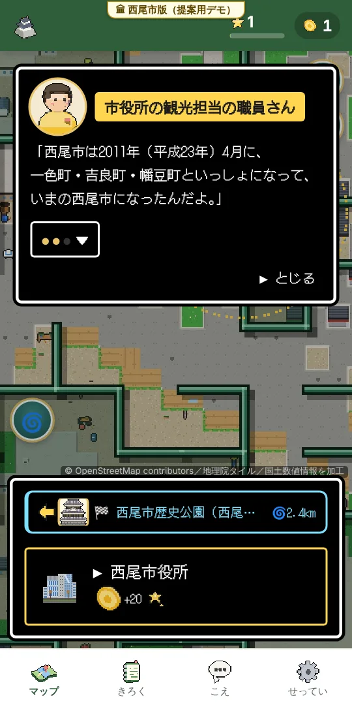
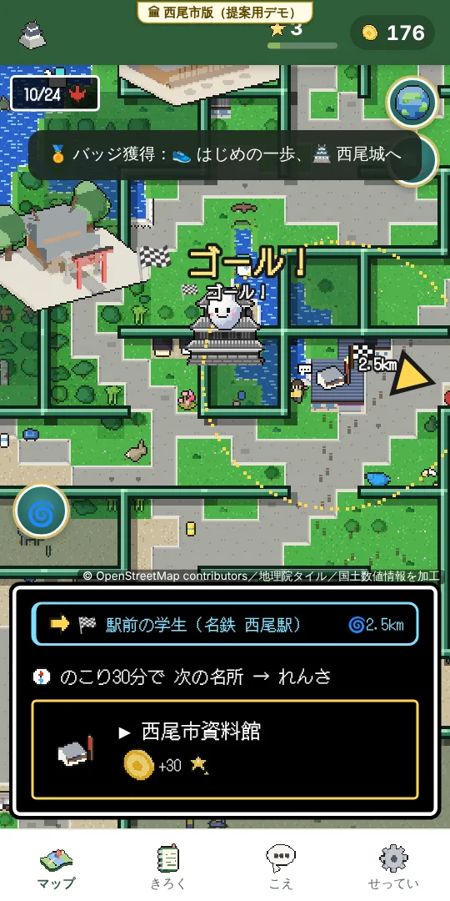
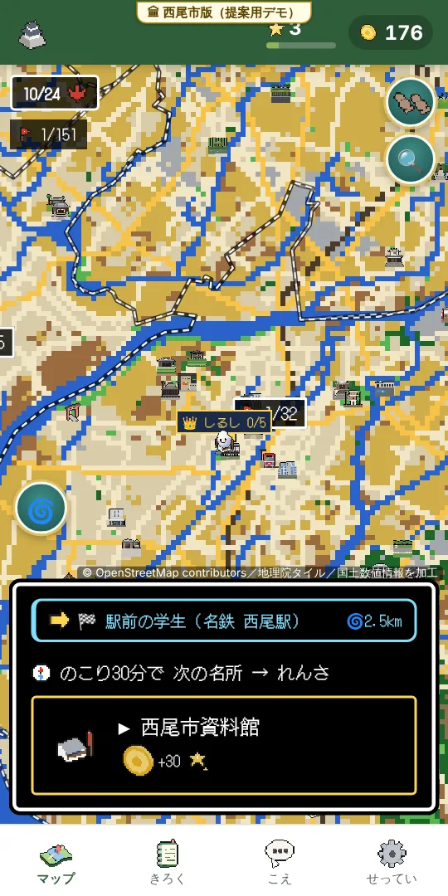

まずは 30秒、さわってみてください
スマホで QR コードを読むと、「西尾市版（提案用デモ）」が ひらきます。
- アプリの インストールも、会員登録も いりません（ブラウザで ひらくだけ。無料）
- 「🌀 傾けて めいろ」を押すと、名鉄 西尾駅と 西尾城跡の あいだ あたりから はじまり、はじめの ゴールは 西尾城跡（西尾市歴史公園）です
- 西尾市版では、お店の宣伝・特典を はずし、市役所に「観光担当の職員さん」を置いています
どんな ゲームか

地図が めいろに
まちの人の話
名所が ゴール
西尾ぜんぶの 地図
遊びかた
- 🌀 傾けて めいろ：西尾の本物の道で できた めいろを、スマホを傾けて お米を転がし、名所（ゴール）へ。家からでも 西尾めぐり
- 🚶 あるいて遊ぶ：位置情報を使い、実際に まちを歩いて 名所で チェックイン
- 📜 まちの人の話：西尾にいそうな人（ガイドさん・茶畑のおじいさん・漁師さん…）が、出典のある 西尾の話をして、次の行き先を すすめます
- 🖼 西尾ドット絵帳：てん茶の茶畑・一色のうなぎ・佐久島・西尾城の丑寅櫓…西尾ならではの ドット絵が あつまります
西尾市にとっての 3つの よいこと
① 名所を 知ってもらう
遊ぶうちに、西尾・一色・吉良・幡豆・佐久島の 名所と 行事を、出典のある 短い説明で 知ってもらえます。
② 来てもらう きっかけ
家で めいろを ぬけた名所に、こんどは「あるいて遊ぶ」で 実際に 行ける。市外の人の 西尾めぐりの 入り口に。
③ 市民の声が 集まる
ゲームの「こえ」タブで、名所や まちへの 声を 受けつけ、毎月 種類・地区ごとに まとめます。
いま ゲームに 入っているもの
—西尾市内の 名所（説明つき）
—西尾市内で 話せる まちの人
—西尾市内の 行事（月ごとに 案内）
74,000西尾ドット絵帳の 絵（西尾ならではの 37の 題材）
6となりの 市町（岡崎・安城・碧南・高浜・幸田・蒲郡）
名所・まちの人・行事の 数は、この ページを ひらいたときに ゲームの データから 数えています（ドット絵の 枚数は プレイテストで ゲームと 同じか 確かめています）。
ご相談したいこと（案）
どれも これから ご相談したい 案です。形や 進めかたは、ご担当者さまの お考えに あわせます。
- 西尾市版の 公開：内容を 市で ご確認いただいたうえで、「提案用デモ」の札を はずした 西尾市版として 公開する
- 名所・行事の 説明の 確認と 追加：市の 観光資料に もとづいて、名所の説明や 行事の日程を 確かめ、足りない 名所を 加える
- 観光キャンペーン・行事との 連動：行事の 会場めぐりや、期間を決めた めいろ（例：まつりの会場を ゴールにする）
- 市民の声の ご提供：毎月の「プレイヤーの声」のまとめ（数と 種類・地区。声の文は そのまま 写しません）を お届けする
- ドット絵の 活用：西尾の名所の ドット絵（西尾の四季ドット絵）を、市の 紹介に 使っていただく
安心して 使っていただくために
| 位置情報 | 現在地の座標は、どこにも 送りません。記録は その スマホの 中（ブラウザ）だけに 残ります（プライバシーポリシー） |
|---|---|
| 安全 | はじめの画面で「歩きスマホ・傾けながら歩くのは やめましょう」と お知らせしています。私有地・立入禁止の 場所には 入らないよう お願いしています |
| 内容の 確かさ | まちの人の話と 行事は、出典のある 事実（観光協会・市・県の ページなど）を もとに しています。名所の 位置と 説明は 公開されている 資料で 調べたものです。市の 資料で 確かめていただけると、より 正確に なります |
| 地図 | OpenStreetMap、国土地理院の 地理院タイル・標高、国土交通省の 国土数値情報を 加工して 作っています（それぞれの 利用規約に そって 表示） |
| 西尾市版の 表示 | 画面の上に「🏛 西尾市版（提案用デモ）」の札を いつも出し、「西尾市の公式のものではありません」と 書いています。市章や マスコットは 使っていません |
| 動く しくみ | スマホの ブラウザだけで 動きます（iPhone・Android・パソコン）。遊んだ 記録は サーバーに ためません（「こえ」で おたよりを 送ったときだけ、その 文を 受けとります） |
つくった人・お問い合わせ
西尾のお米屋さん 近藤米穀店・らいすぴあ（西尾市米津町・明治25年創業）が、西尾の まちを 知ってもらいたくて つくっている 試作の ゲームです。
- 電話：0563-54-4001（近藤米穀店）
- ホームページ：ricepia.jp
- ふだんの版（お店の版）：go.ricepia.jp
この資料と 西尾市版は、ご提案のための 試作です。西尾市が つくったもの・みとめたもの では ありません。